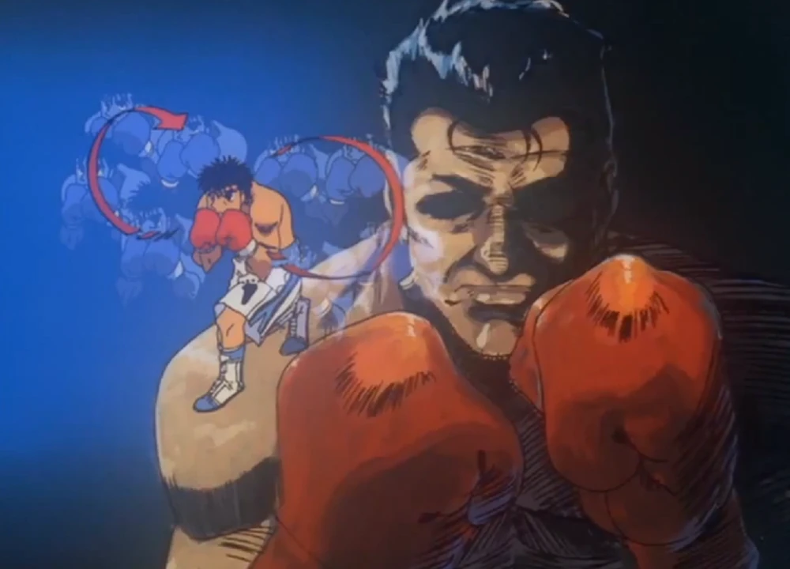

Dampsey roll
The Dempsey Roll (デンプシー・ロール, Denpushī Rōru) is a technique used by Ippo Makunouchi. First created by Jack Dempsey, Ippo came up with the idea without knowing it already existed while watching how Mike Tyson bobbed his head and used the momentum to punch.

Dampsey roll in using Ippo
'A ferocious opponent who destroys with a white fang.'